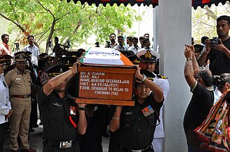
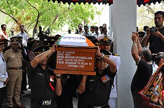

Erased Chapters From Indian Army
MAJOR MUKUND VARADARAJAN AC


MAJOR MUKUND VARADARAJAN (12 April 1983 – 25 April 2014)

Early Life And Education
Mukund Varadarajan was born on 12 April 1983 to a Tamil speaking family to R Varadarajan and Geetha Varadarajan in his native Paruthipattu Village, Avadi, Chennai, Tamil Nadu, India. Mukund and his family moved to Tambaram after his father got job in a Public Sector Bank. His grandfather Raghavachari and two of his uncles also served in the army and this motivated him to join the Armed forces. Mukund received his Bachelor of Commerce From Sri Chandrasekharendra Saraswathi Viswa Mahavidyalaya at Kanchipuram and a diploma in journalism from the Madras Christian College, Chennai. Mukund has two sisters, Swetha and Nithya. He married his longtime-girlfriend and college mate Indhu Rebecca Varghese on 28 August 2009. The couple's daughter, Arshea Mukund, was born on 17 March 2011. Mukund Varadarajan AC was an Indian Army officer and a recipient of the Ashoka Chakra. Mukund, a commissioned officer in the Indian Army's Rajput Regiment, was posthumously awarded the Ashok Chakra for his actions during a counterterrorism operation while on deputation to the 44th Rashtriya Rifles battalion in Jammu and Kashmir. His biographical film in Tamil, Amaran, was released on the occasion of Diwali, 31 October 2024.
Mukund Varadarajan & Vikram Singh
Major Mukund Varadarajan and Sepoy Vikram Singh were close friends and fellow soldiers in the Indian Army's 44 Rashtriya Rifles: Sepoy Vikram Singh was born on 15 March 1983 in Rewari, Haryana. After his schooling, he joined the Army in the year 2002 at the age of 19 years. He was enrolled into 17th Battalion of the Rajput regiment, an infantry Regiment well known for its fearless soldiers. After serving for a couple of years with his parent unit Sepoy Vikram Singh was later deputed in December 2012, to serve with 44 Rashtriya Rifles battalion, deployed in J & K for counterinsurgency operations.After serving for few years, he got married to Ms Sushila and the couple had a son Abhishek. Sepoy Vikram Singh was soft-spoken and gentle hearted and epitomized the soldiering excellence. He participated in many operations and proved his mettle as a soldier many a times.
Military career
Mukund was an alumnus of Officers Training Academy and after graduating, he received a short-service commission as a Lieutenant in the Rajput Regiment (22 Rajput) on 18 March 2006. On 18 March 2006, he was granted a regular commission with the rank of lieutenant and received an ante-dated promotion to Captain from 18 October 2008.[11] He served at the Infantry School in Mhow, Madhya Pradesh and was part of a United Nations Mission in Lebanon. He was promoted to Major on 18 October 2012 and was deputed to the 44th Battalion of the Rashtriya Rifles that December and posted in the Shopian district of Jammu and Kashmir.
22 Rajput Regiment & 44 Rashtriya Rifles
On 25 April 2014, Mukund led a cordon and search operation in a village in South Kashmir, based on intelligence inputs regarding the presence of militants. During the operation, his team came under heavy fire. Mukund quickly responded, aware that the cover of darkness could allow the militants to escape. Since the number of civilians inside the house was unclear, the use of heavy-caliber weapons was not an option. Along with Sepoy Vikram Singh, Mukund crawled through the orchard in front of the house, avoiding gunfire. After successfully crossing the orchard, they entered the house, where they were met with intense firing, and Mukund was grazed by a bullet on his forearm. The two soldiers swiftly retaliated, killing one of the militants. Mukund identified that the militant commander they were searching for was not among the dead. The remaining two militants, including a senior commander of Hizbul Mujahideen, attempted to escape using grenade explosions. Mukund and Singh took cover to avoid injury. In the chaos, Mukund recognized the senior commander among the fleeing militants as they made their way to the nearby outhouse.


 

An Inspiration ForGenerations To Come
In the story of courage, dedication, and service to his country is a source of inspiration for many aspiring soldiers and officers in the Indian Armed Forces: